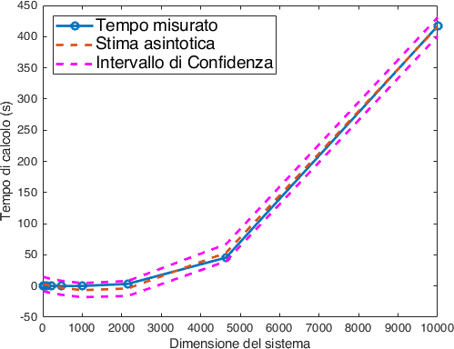

Laboratorio 4: Sistemi lineari triangolari e fattorizzazione LU
Contents
Laboratorio 4: Sistemi lineari triangolari e fattorizzazione LU#
In questo laboratorio ci focalizzeremo sul problema di risolvere un sistema lineare. Partiremo dal caso dei sistemi triangolari per poi occuparci del caso generale tramite la fattorizzazione \(PA = LU\) della matrice dei coefficienti.
Soluzione di sistemi triangolari#
I sistemi triangolari giocano un ruolo fondamentale nei calcoli matriciali. Molti metodi sono costruiti sull’idea di ridurre un problema alla soluzione di uno o più sistemi triangolari, questo include praticamente tutti i metodi diretti per la risoluzione di sistemi lineari.
Due funzioni utili per lavorare con i sistemi triangolari sono le funzioni
triu e tril. Dal loro help:
tril Extract lower triangular part.
tril(X) is the lower triangular part of X.
tril(X,K) is the elements on and below the K-th diagonal
of X . K = 0 is the main diagonal, K > 0 is above the
main diagonal and K < 0 is below the main diagonal.
ed analogamente per triu:
triu Extract upper triangular part.
triu(X) is the upper triangular part of X.
triu(X,K) is the elements on and above the K-th diagonal of
X. K = 0 is the main diagonal, K > 0 is above the main
diagonal and K < 0 is below the main diagonal.
Possiamo usarle per costruire sistemi triangolari a partire da sistemi densi.
Sostituzione in avanti e all’indietro#
Sui computer seriali i sistemi triangolari sono universalmente risolti dagli algoritmi standard di sostituzione in avanti e all’indietro. Sulle macchine parallele la situazione è sensibilmente più varia, ma questo trascende gli obiettivi di questo corso.
Sia \(L\) una matrice triangolare inferiore, vogliamo risolvere un sistema della forma:
che possiamo riscrivere in forma estesa come:
Da cui è facile ricavare che la componente \(i\)esima della soluzione è
Esercizio 1
Si scriva una function che implementa il metodo di sostituzione in avanti con il seguente prototipo.
function [x] = forwardsolve(A,b)
% FORWARDSOLVE Se A è una matrice triangolare inferiore risolve
% il sistema Ax=b tramite metodo di sostituzione in avanti.
% Input:
% A = matrice triangolare inferiore
% b = vettore del termine noto
% Output:
% x = vettore della soluzione
end
Si presti attenzione:
alla verifica degli input, il sistema deve essere triangolare inferiore e quadrato;
ad utilizzare le operazioni vettorizzate di MATLAB, ovvero si ragioni su come evitare di usare un ciclo
forper effettuare la somma che compare nella formula di soluzione.
Si può testare il codice con il seguente problema:
%% Sostituzione in avanti
n = 10;
A = tril(ones(n,n));
b = (1:n).';
x = forwardsolve(A,b);
fprintf("Sostituzione in avanti: Errore sulla soluzione è: %1.2e\n",norm(A*x-b));
Sia \(U\) una matrice triangolare superiore, vogliamo risolvere un sistema della forma:
che possiamo riscrivere in forma estesa come:
Da cui di nuovo ricaviamo facilmente la componente \(i\)ma della soluzione come:
Esercizio 2
Si scriva una function che implementa il metodo di sostituzione all’indietro con il seguente prototipo.
function [x] = backwardsolve(A,b)
% BACKWARDSOLVE Se A è una matrice triangolare superiore risolve
% il sistema Ax=b tramite metodo di sostituzione all'indietro.
% Input:
% A = matrice triangolare inferiore
% b = vettore del termine noto
% Output:
% x = vettore della soluzione
end
Si presti attenzione:
alla verifica degli input, il sistema deve essere triangolare superiore e quadrato;
ad utilizzare le operazioni vettorizzate di MATLAB, ovvero si ragioni su come evitare di usare un ciclo
forper effettuare la somma che compare nella formula di soluzione.
Si può testare il codice con il seguente problema:
%% Sostituzione all'indietro
n = 10;
A = triu(ones(n,n));
b = (1:n).';
x = backwardsolve(A,b);
fprintf("Indietro: Errore sulla soluzione è: %1.2e\n",norm(A*x-b));
Tempo di calcolo#
Si è visto a lezione che il numero di operazioni necessario a risolvere un
sistema triangolare con l’algoritmo di sostituzione è un \(O(n^2)\) con \(n\) la
dimensione del sistema. Proviamo ad indagare come si comporta a questo riguardo
la nostra implementazione. Per farlo sfruttiamo i codici che abbiamo appena
scritto per la sostituzione forward o backward e le funzioni tic e toc.
sizes = floor(logspace(1,4,10));
times = zeros(size(sizes));
h = waitbar(0,"Calcolo in corso...");
for i=1:length(sizes)
n = sizes(i);
A = triu(ones(n,n));
b = (1:n).';
tic;
x = backwardsolve(A,b); % Allo stesso modo con forwardsolve
times(i) = toc;
waitbar(i/length(sizes));
end
Ora che abbiamo i tempi possiamo visualizzare quello che abbiamo ottenuto sfruttando alcune funzioni di MATLAB. Poiché sappiamo che il numero di operazioni è una funzione che scala come un \(O(n^2)\) possiamo assumere in prima approssimazione che anche il tempo si comporti allo stesso modo. Cerchiamo dunque di fittare un polinomio di secondo grado ai nostri dati:
[P,S] = polyfit(sizes,times,2);
Con la mia macchina, questa procedure mi restituisce il polinomio:
insieme ad una struttura \(S\) che contiene informazioni relative all’algoritmo con cui questa procedura è stata eseguita. Possiamo usare tutto questo per confrontare i valori del fit con quelli dei dati
[y_fit,delta] = polyval(P,sizes,S);
plot(sizes,times,'o-',...
sizes,y_fit,'--',...
sizes,y_fit+2*delta,'m--',sizes,y_fit-2*delta,'m--',...
'Linewidth',2);
xlabel('Dimensione del sistema')
ylabel('Tempo di calcolo (s)')
legend({'Tempo misurato','Stima asintotica','Intervallo di Confidenza'},...
'FontSize',14,'Location','northwest');
dove abbiamo stampato sia il tempo misurato, sia il fit con il suo intervallo di confidenza entro il 95%. Dalla Fig. 4 vediamo che la predizione quadratica è piuttosto efficace.

Fig. 4 Tempo di calcolo come un \(O(n^2)\) della dimensione.#
Il metodo di eliminazione di Gauss e la fattorizzazione LU#
Il metodo di eliminazione di Gauss (Carl Friedrich Gauss, 1777-1855), noto anche come algoritmo di riduzione per le righe, è un algoritmo per risolvere sistemi quadrati di equazioni lineari. Come avete visto a lezione si riduce ad una sequenza di operazioni eseguite sulla corrispondente matrice di coefficienti.
Alcune estensioni di questo metodo possono essere utilizzate anche per calcolare il rango di una matrice, il determinante di una matrice quadrata e l`inversa di una matrice invertibile.
Implementare la fattorizzazione LU#
Se \(A\) è una matrice \(n\) per \(n\) su un campo \(\mathbb{K}\) (\(A \in M_n(\mathbb{K})\)), allora \(A\) si dice «avere una fattorizzazione \(LU\)» se esiste una matrice triangolare inferiore \(L \in M_n(\mathbb{K})\) e una matrice triangolare superiore \(U \in M_n(\mathbb{K})\) tale che
Questo è particolarmente utile, poiché, se \(A = LU\), e se \(L\) ed \(U\) sono invertibile, allora ogni soluzione \(\mathbf{y}\) di \(L\mathbf{y} = \mathbf{b}\) produrrà una soluzione \(\mathbf{x}\) di \(A\mathbf{x} = \mathbf{b}\) via \(U\mathbf{x} = \mathbf{y}\).
Pericolo
In generale non tutte le matrici \(A\) ammettono una fattorizzazione \(LU\) di questa forma, si consideri ad esempio la matrice:
questa richiederebbe di avere gli elementi diagonali \(u_{ii}\), \(l_{ii}\), \(i=1,2\), diversi da \(0\), ma questo contraddirebbe \(0 = A_{11} = l_{11}u_{11}\).
Una condizione necessaria e sufficiente affinché una fattorizzazione di questa forma esista per una matrice \(A \in M_n(\mathbb{K})\), \(\mathbb{K} = \mathbb{R},\mathbb{C}\), è che
per \(k = 1,\ldots,n-1\) e
Quando esiste la decomposizione \(LU\) non è unica (le combinazioni di \(L\) e \(U\) per una data \(A\) sono infinite). Per determinare un algoritmo univoco è necessario porre determinati vincoli su \(L\) o \(U\) (Tabella 9).
Come primo esercizio implementeremo la fattorizzazione \(LU\) nella forma di Doolittle, che è quella più strettamente legata all’algoritmo di eleminazione di Gauss che conoscete sin dal corso di algebra lineare.
Se scriviamo l’uguaglianza \(A = LU\) con il vincolo aggiuntivo per cui \(l_{i,i} = 1\), per \(i=1,\ldots,n,\) possiamo ricavare che i termini della matrice \(U\) sono dati da
mentre quelli della matrice \(L\) sono dati da:
Esercizio
Si usino le relazioni (4) e (5) per implementare la versione di Doolittle dell’algoritmo \(LU\) per una matrice quadrata. Un prototipo della funzione è dato da:
function [L,U] = doolittlelu(A)
%%DOOLITTLELU Calcola la fattorizzazione LU della matrice A con i vincolo di
%Doolittle.
% Controllo degli input:
% Pre-allocazione memoria:
L = eye(n,n);
U = zeros(n,n);
%!! Questa potrebbe essere anche:
% L = zeros(n,n);
% U = zeros(n,n);
% Dipende da come decidete di utilizzare le formule...
% Utilizzo delle formule per l_{ij} e u_{ij}.
end
Si faccia un controllo dell’input: la matrice \(A\) è quadrata?
Si utilizzino operazioni vettorizzate per le somme che compaiono in (4) e (5)
Per verificare la buona riuscita dell’implementazione si può usare il seguente problema di test.
%% Test della versione di Doolittle dell'algoritmo LU
clear; clc;
A = [ 3 -1 4;
-2 0 5;
7 2 -2 ];
[L,U] = doolittlelu(A);
fprintf("|| A - LU || = %1.2e\n",norm(A - L*U,2));
% Vediamone gli ingressi:
format rat
disp(A)
disp(L)
disp(U)
disp(L*U)
format short
Suggerimento
Guardando alla formulazione delle equazioni (4) e (5) potremmo osservare che in realtà possiamo sovrascrivere le entrate della matrice \(A\) con la fattorizzazione \(LU\). Se avete concluso la prima parte pensate a come è possibile realizzare questa versione.
Un suggerimento più estensivo
Possiamo sviluppare il ciclo di istruzioni sostanzialmente in due ordine, in un primo procediamo alla fattorizzazioni colonna per colonna, ovvero:
for k=1:n
L(k:n,k) = A(k:n,k) / A(k,k); % Dividiamo per il Pivot
U(k,1:n) = A(k,1:n); % Aggiorniamo le entrate della U
A(k+1:n,1:n) = A(k+1:n,1:n) - L(k+1:n,k)*A(k,1:n);
end
U(:,end) = A(:,end);
Nel caso dell”esempio vediamo:
La seconda alternativa è quella di eseguire questo ciclo procedendo lungo le righe della matrice
for i = 1:1:n
for j = 1:(i - 1)
L(i,j) = (A(i,j) - L(i,1:(j - 1))*U(1:(j - 1),j)) / U(j,j);
end
j = i:n;
U(i,j) = A(i,j) - L(i,1:(i - 1))*U(1:(i - 1),j);
end
Nel caso dell”esempio vediamo:
L”unica differenza tra le due implementazioni è l’ordine, per colonna e per riga rispettivamente, in cui facciamo le operazioni.
La fattorizzazione con pivoting#
Per fare sì che la fattorizzazione \(LU\) si possa calcolare per una generica matrice (ovvero anche quando si incontrano pivot nulli) e per migliorare la stabilità dell’algoritmo , possiamo introdurre una strategia di scambio delle righe della matrice detta, per l’appunto, di pivoting parziale.
Formalmente, questo vuol dire che otterremo una fattorizzazione della forma
in cui \(P\) è una matrice di permutazione. Strutturalmente una matrice di permutazione non è nient’altro che una matrice identità di cui abbiamo permutato le righe. Vediamo un veloce esempio:
format rat
H = hilb(5)
P = eye(5)
P = P([5:-1:1],:)
P*H
che costruisce le matrici
e ci mostra anche come possiamo permutare due (o più) righe di una matrice MATLAB. Abbiamo ora tutti gli ingredienti necessari a costruire la nostra versione fatta in casa della fattorizzazione LU con pivoting in MATLAB.
Esercizio
Si costruisca una funzione ludecomp per costruire la fattorizzazione \(LU\) con
pivoting parziale per una matrice \(A\). Un prototipo della funzione è quindi:
function [L,U,P] = ludecomp(A)
%%LUDECOMPP Fattorizzazione LU con pivoting parziale.
% Controllo dell'input:
% Allocazione della memoria:
L = zeros(n);
U = zeros(n);
P = eye(n);
% Fattorizzazione con Pivoting
end
Si faccia un controllo dell’input: la matrice \(A\) è quadrata?
Si utilizzino operazioni vettorizzate per le somme che compaiono in (4) e (5).
Suggerimento
Se il ciclo esterno è per \(k=1,\ldots,n\) possiamo individuare il pivot facendo:
[~,r] = max(abs(A(k:end,k)));
r = n-(n-k+1)+r; % Trasliamo l'indice in questione
Qual è l’effetto della traslazione di indice?
Calcolo del determinante#
Dopo aver calcolato la fattorizzazione \(LU\) di una matrice \(A\) è possibile utilizzarla anche per calcolare il determinante della matrice \(A\). Si può fare sfruttando il teorema di Binet che ricordiamo collega il prodotto fra matrici quadrate con il determinante:
ed, in particolare,
che, se usiamo la formulazione di Doolittle si riduce quindi ad essere:
Che possiamo riportare facilmente su MATLAB come:
function res = ludet(A)
%%LUDET Calcola il determinante della matrice A sfruttando la sua fattorizzazione
%LU in forma di Doolittle e senza pivoting.
[~,U] = doolittlelu(A);
res = prod(diag(U));
end
e testare rapidamente con:
A = pascal(5,2);
fprintf('Errore relativo: %1.2e\n',abs(ludet(A) - det(A))/abs(det(A)));
che ci dovrebbe restituire un errore relativo, rispetto alla funzione det
nativa di MATLAB dell’ordine di 3.33e-16.
Avvertimento
Per costruire il calcolo del determinante anche nel caso in cui si utilizzi la fattorizzazione \(LU\) con pivoting è necessario tenere traccia del numero di scambi di righe effettuati.
Le funzioni di MATLAB#
MATLAB ha implementata tra le sue routine una versione della fattorizzazione \(LU\) ed un algoritmo per la soluzione dei sistemi lineari.
Per la fattorizzazione LU il comando ha il medesimo nome lu e permette una certa
flessibilità.
[L,U] = lu(A), restituisce una matrice triangolare superiore in \(U\) e una matrice triangolare inferiore permutata in \(L\), tale che \(A = LU\). La matrice di input \(A\) può essere densa o sparsa.[L,U,P] = lu(A), restituisce una matrice triangolare inferiore \(L\) con diagonale di uno, matrice triangolare superiore \(U\) ed una matrice di permutazione \(P\) tale che \(PA = LU.\) Con un argomento di input opzionale è possibile scegliere il formato della \(P\), ovvero se chiamalu(A, outputForm)conoutputFormuguale a'matrix'(default) \(P\) è memorizzata come una matrice, se si chiama con l’opzione'vector'allora \(P\) è un vettore tale cheA(P,:) = L*U.[L,U,P,Q] = lu(A)restituisce una matrice triangolare inferiore \(L\) con diagonale di uno, matrice triangolare superiore \(U\) e due matrici di permutazione \(P\) e \(Q\) tali che \(PAQ = LU\). Per una matrice sparsa questa opzione è significativamente più efficiente della versione con tre output.
Definition 1
Una matrice sparsa o array sparso è una matrice in cui la maggior parte degli elementi è zero. Per dare una definizione rigorosa riguardo alla proporzione di elementi di valore zero affinché una matrice sia qualificata come sparsa è tipicamente necessario considerare la sorgente del problema che la ha generata, e.g., la discretizzazione di una PDE. Un criterio comune è che il numero di elementi diversi da zero sia approssimativamente uguale al numero di righe o colonne.
Al contrario, se la maggior parte degli elementi è diversa da zero, la matrice è considerata densa.
Informazioni sulle matrici sparse possono essere recuperate dal manuale di
MATLAB (help sparse). Non scenderemo qui in ulteriori dettagli.
La funzione per risolvere i sistemi lineari è la funzione mldivide \.
Si tratta di una delle funzioni più elaborate di MATLAB, il comando A\B è la
divisione matriciale di A in B, moralmente è la stessa operazione di
INV(A)*B, ma è calcolata in modo diverso, stabile ed efficiente.
Se \(A\) è una matrice \(N\) per \(N\) e \(\mathbf{b}\) è un vettore colonna con \(N\)
componenti, o una matrice con più di queste colonne, allora X = A\b è la
soluzione dell’equazione A*X = B.
Avvertimento
Viene stampato un messaggio di avviso se A è scalata male o malcondizionata, ad esempio
x = hilb(15)\ones(15,1);
restituisce
Warning: Matrix is close to singular or badly scaled. Results may be inaccurate.
RCOND = 5.460912e-19.
Esercizi#
Consideriamo alcune applicazioni ingegneristiche del problema calcolare le soluzione di un sistema [Kiu15].
Esercizio
La formulazione per gli spostamenti di una trave reticolare piana è simile a quella di un sistema di masse e molle. Le differenze sono che
i termini di rigidità sono dati da \(k_{i} = (E A/L)_ {i}\), dove \(E\) è il modulo di elasticità, \(A\) rappresenta l’area della sezione di taglio e \(L\) è la lunghezza dell’elemento;
ci sono due componenti dello scostamento in ogni punto di giuntura.
Per la trave reticolare in figura:

Fig. 5 Profilo di un elemento della trave reticolare piana.#
si ottiene quindi il seguente sistema di equazioni lineari
dove
K = [27.58 7.004 -7.004 0 0
7.004 29.57 -5.253 0 -24.32
-7.004 -5.253 29.57 0 0
0 0 0 27.58 -7.004
0 -24.32 0 -7.004 29.57];
p = [0 0 0 0 -45]'; % kN
si determinino tutti gli scostamenti \(u_i\) per il sistema.
Esercizio
Riprendiamo l’esperimento fatto ne La fattorizzazione con pivoting con la matrice di Hilbert
che è un noto esempio di matrice malcondizionata. Si scriva un programma specializzato nella risoluzione delle equazioni \(H \mathbf{x} = \mathbf{b}\) mediante il metodo di decomposizione \(LU\) con e senza pivoting, dove \(H\) è la matrice di Hilbert di dimensione arbitraria \(n \times n\), e
L’unico input del programma deve essere \(n\). Eseguendo il programma, si determinino i più grandi valori di \(n\) per i due algoritmi per cui la soluzione è entro 6 cifre significative della soluzione esatta.
Esercizio
Il sistema mostrato in Fig. 6 è costituito da \(n\) molle lineari che supportano \(n\) masse. Le costanti elastiche delle molle sono indicate con \(k_i\), i pesi delle masse sono \(W_i\), e \(x_i\) sono gli spostamenti delle masse (misurati dalle posizioni in cui le molle sono indeformate). La cosiddetta formulazione dello spostamento si ottiene scrivendo l’equazione di equilibrio di ciascuna massa e sostituendo le forze elastiche con \(F_i = k_i (x_{i+1} - x_{i} )\).
Il risultato è il sistema simmetrico e tridiagonale di equazioni
si scriva un programma che risolve queste equazioni per dati valori di \(n\), \(\mathbf{k}\) e \(\mathbf{W}\). Si risolva il problema con \(n=5\) e
Bibliografia#
- Kiu15
Jaan Kiusalaas. Numerical Methods in Engineering with MATLAB®. Cambridge University Press, 3 edition, 2015. doi:10.1017/CBO9781316341599.